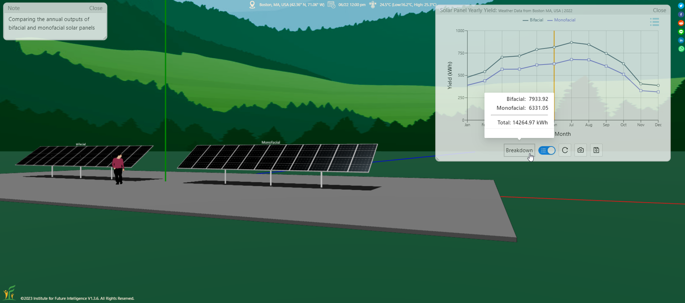
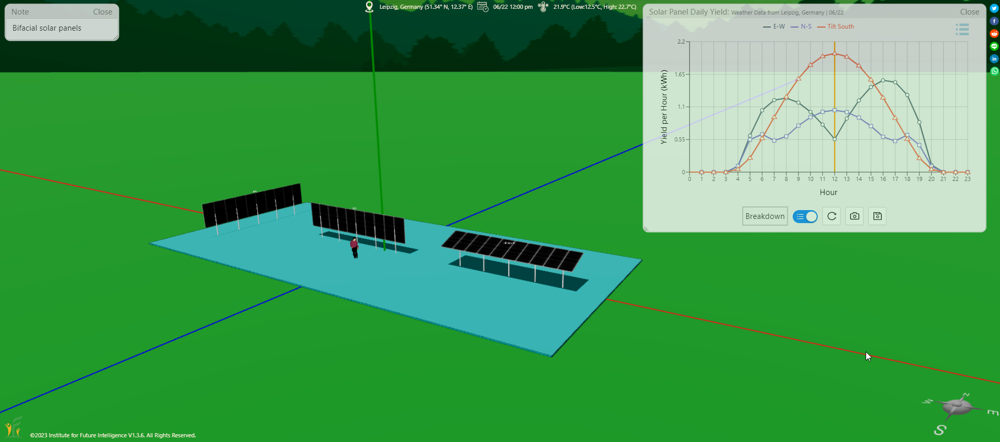
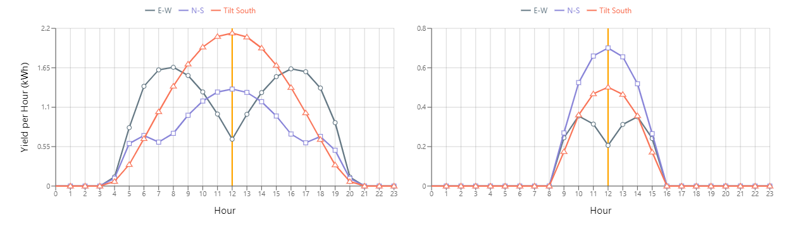
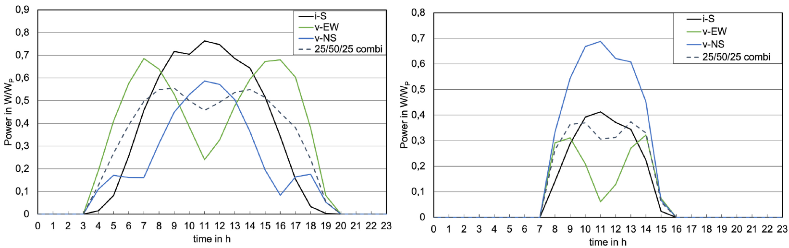
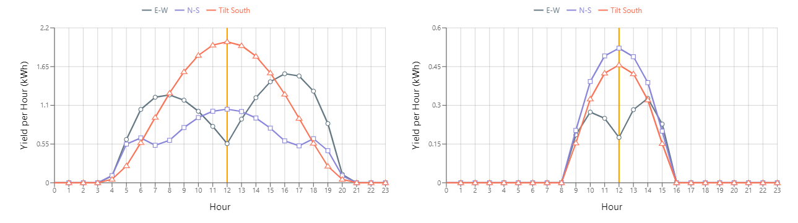
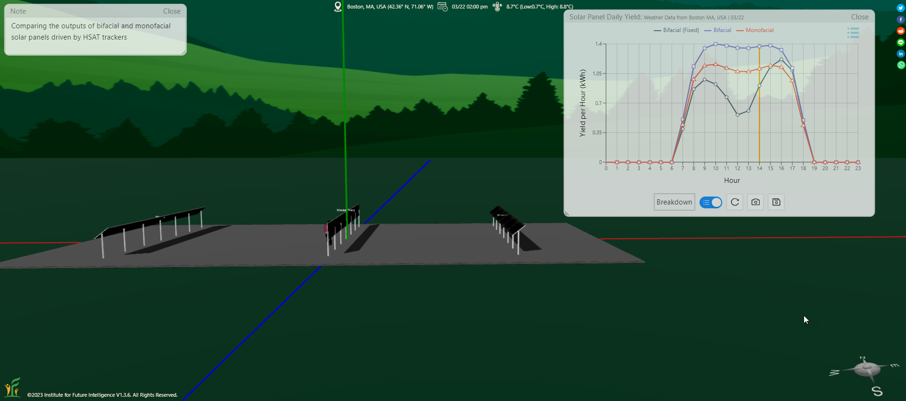

Bifacial Solar Panels
Exploring how double-sided photovoltaic modules perform against their monofacial cousins under different mounting strategies.
A bifacial solar panel can generate electricity when illuminated on both its front and rear surfaces. Bifacial solar panels can be used in ground-mounted projects to increase the electricity generation. The solar energy industry is adopting bifacial solar panels at a rapid pace as the cost of making solar cells continues to drop dramatically. The International Technology Roadmap for Photovoltaic projected that approximately 45% of the solar panels manufactured in 2024 would be bifacial and that number would increase to 70% by 2030 (with the remaining 30% for rooftop systems where bifacial solar panels make no sense).
Bifacial solar panels are now supported in Aladdin. We have added six CS3W BiHiKu series of bifacial solar panel models made by Canadian Solar, five Tiger LM 72HC-BDVP series by Jinko Solar, eight Q.Peak Duo XL-G10/G11 series by Qcells, five SPR Performance 5 series by SunPower, five Vertex series by Trina Solar, and six Panda 3.0 Pro series by Yingli Solar, and will continue to add more from other manufacturers. But how do bifacial solar panels perform compared with their monofacial cousins? Let's find out with some Aladdin simulation and analysis.
Note: To add a bifacial solar panel in Aladdin, you can first add a solar panel of the currently selected type (which may be a monofacial one) and then change the type to a bifacial one using the Change PV Model item of the context menu for the selected solar panel. Aladdin does not support "self-defined" solar panels that you can customize their properties freely. The properties of all solar panels in Aladdin come from the specifications provided by their manufacturers.
Monofacial solar panels vs. bifacial solar panels
Assuming a value of 0.3 for the ground albedo throughout the year, a bifacial solar panel would generate about 25% more electricity than a comparable monofacial one in the Boston area, as predicted by the following Aladdin model. This seems to agree with what most manufacturers claim (e.g., Canadian Solar asserts up to 30% of additional gain from the backside). So if a bifacial solar panel costs less than 25% than a monofacial one, you may be financially better off with it as the installation cost, operational cost, and the life span should be the same.

Hourly outputs of vertically-installed bifacial solar panels
How accurate are Aladdin's simulation results for bifacial solar panels? We found an article by Reker, Schneider, and Gerhards, from Leipzig, Germany, published in Smart Energy in 2022. They studied vertically-installed bifacial solar panels as they represent an interesting configuration that can save a lot of land space for other uses such as agriculture. We conducted a qualitative comparison between Aladdin's results and their measurements with the following model.

The hourly outputs of three bifacial solar panel arrays — vertically-installed north-south-aligned, vertically-installed east-west aligned, and south-facing with a tilt angle of 20° — predicted by Aladdin for a summer day (June 22) and a winter day (December 22) in Leipzig are shown below, assuming a bifaciality factor of 1 (a prefectly symmetric case).

The above patterns agree qualitatively with the results measured by the German team (shown as follows).

In reality, the front and rear sides of a bifacial solar cell do not have the same efficiency due to their design differences. The rear sides of many bifacial solar panels only have about 70% of the efficiency of the front sides. This is known as the bifaciality factor. As shown in the graphs below, in the case of a vertically-installed bifacial solar panel array aligned in the north-south direction, this factor causes an asymmetric pattern before and after noon, depending on which direction the front side faces. In the case of a vertically-installed bifacial solar panel array aligned in the east-west direction, this factor can cause a significant loss if the rear side is mistakenly installed to face the sun.

[We suspect that the German team either used a type of bifacial solar panel that has nearly perfect bifaciality or oriented half of the panels to face east and half to face west to achieve the morning-afternoon symmetry in their results.]
Bifacial solar panels driven by trackers
Since bifacial solar panels can receive sunlight from all directions, does it still make sense to use solar trackers for them? Let's find out with the following model that uses a horizontal single-axis tracker (HSAT) for a monofacial solar panel array and a bifacial solar panel array, respectively, with a vertically-fixed bifacial solar panel array as a reference. The results show that the bifacial array driven by HSAT generates significantly more electricity (about 40%) than the vertically-fixed one, and about 20% more than the monofacial one driven by HSAT (assuming a ground albedo of 0.3 throughout the year). This is probably an engineering reason why the University of Illinois Urbana-Champaign adopted both bifacial solar panels and HSAT technologies in their Solar Farm 2.0 Project. If interested, you can also find an Aladdin model of this innovative solar farm on the Models Map within Aladdin.

Note that the morning and afternoon outputs are symmetric when a bifacial solar panel array with a bifaciality factor less than 1 is driven by an HSAT tracker. Also, the output does not peak at noon for bifacial solar panels driven by HSAT, which is the same as monofacial solar panels driven by HSAT. This phenomenon is explained here.
Conclusion
The increasing use of bifacial solar panels in the renewable energy industry is engendering new design possibilities. Start exploring these possibilities with Aladdin now!
← Back to Aladdin